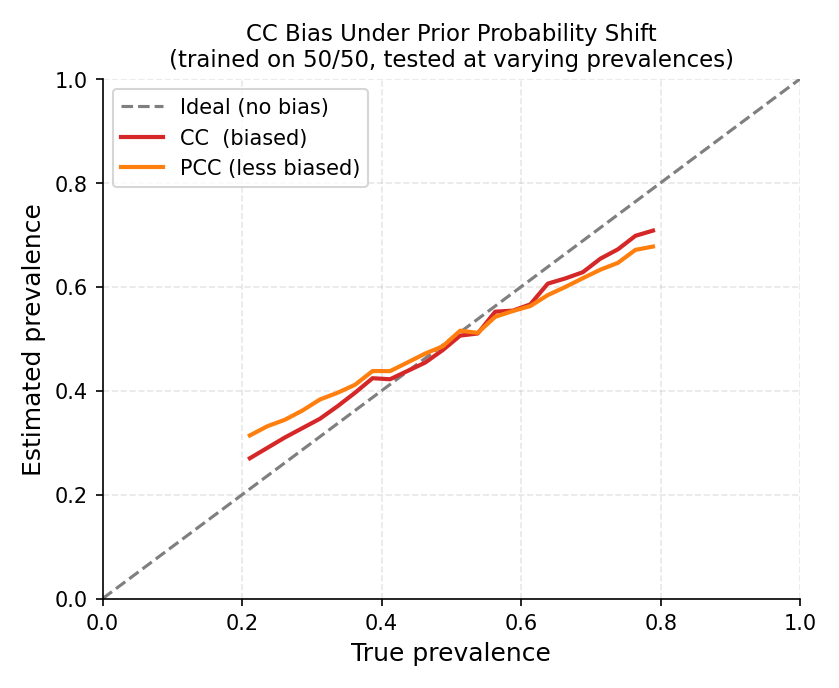

2.3. Counting-Based Quantifiers#
Counting-based quantifiers are the simplest family of aggregative methods: train a classifier, apply it to the test set, and count the fraction of instances assigned to each class. They are cheap, easy to understand, and serve as essential baselines.
See Quantification Foundations for the theoretical background on why counting alone is biased and when you need a stronger correction.
2.3.1. CC — Classify and Count#
CC is the simplest quantification baseline. It trains a hard
classifier \(h\) on labelled data \(L\), applies it to an unlabelled
set \(U\), and counts the proportion of predictions for each class:
Why it exists: CC is the reference baseline for every quantification study. Despite being biased under distributional shift (Forman, 2005), it is fast, interpretable, and competitive when training and test prevalences are close. Always include it as a point of comparison.
{kind=link}

A classifier trained on 50/50 balanced data is evaluated on test sets with varying true prevalences. CC (red) consistently overestimates at low prevalences and underestimates at high ones. PCC (orange) is less biased but still distorted. The dashed line is the ideal unbiased estimator.#
When CC fails
Suppose a classifier trained on balanced data (50 % positive) achieves 90 % accuracy, but the test set has only 5 % positives. CC estimates \(\approx 14\%\) positives — nearly 3× the truth — because the false positives from the 95 % negatives dominate the count. The bias does not vanish with more data; it vanishes only when the distributions match.
2.3.1.1. Parameters#
Parameter |
Default |
Explanation |
|---|---|---|
|
|
Any scikit-learn-compatible classifier with |
|
|
Decision threshold applied to soft scores when the estimator exposes
|
2.3.1.2. Examples#
Basic usage:
from mlquantify.counting import CC
from sklearn.linear_model import LogisticRegression
from sklearn.datasets import make_classification
from sklearn.model_selection import train_test_split
X, y = make_classification(n_samples=1000, weights=[0.8, 0.2],
random_state=42)
X_train, X_test, y_train, y_test = train_test_split(
X, y, test_size=0.3, random_state=42)
q = CC(LogisticRegression())
q.fit(X_train, y_train)
print(q.predict(X_test))
# {0: 0.82, 1: 0.18}
Using aggregate with pre-computed hard labels:
import numpy as np
from mlquantify.counting import CC
q = CC()
hard_labels = np.array([0, 0, 1, 0, 1, 1, 0, 0, 0, 1])
print(q.aggregate(hard_labels))
# {0: 0.6, 1: 0.4}
2.3.2. PCC — Probabilistic Classify and Count#
PCC replaces hard decisions with posterior probabilities and
estimates prevalence as their average over the test set:
where \(P(Y=c \mid x)\) is the soft output of a probabilistic classifier.
Why it exists: PCC smooths out the hard-thresholding noise in CC. By averaging probabilities instead of counting hard predictions, it reduces variance and often reduces bias too — especially when the classifier is well-calibrated. However, Forman (2005) showed that uncalibrated posteriors under prior-probability shift are still biased, so PCC is not a complete solution. It is the best quick upgrade from CC.
2.3.2.1. Parameters#
Parameter |
Default |
Explanation |
|---|---|---|
|
|
A probabilistic classifier with |
2.3.2.2. Examples#
from mlquantify.counting import PCC
from sklearn.ensemble import RandomForestClassifier
q = PCC(RandomForestClassifier(n_estimators=100, random_state=42))
q.fit(X_train, y_train)
print(q.predict(X_test))
# {0: 0.80, 1: 0.20}
Using aggregate with pre-computed posteriors:
import numpy as np
from mlquantify.counting import PCC
# Shape: (n_samples, n_classes)
proba = np.array([[0.9, 0.1],
[0.3, 0.7],
[0.6, 0.4]])
q = PCC()
print(q.aggregate(proba))
# {0: 0.6, 1: 0.4}
2.3.3. GACC — Generalised Adjusted Classify and Count#
GACC extends the binary ACC correction to native multiclass
problems. During training, it builds a confusion matrix \(M\) via
cross-validation (where \(M_{ij}\) is the fraction of class-\(i\)
samples predicted as class \(j\)). At prediction time it solves the
constrained linear system:
where \(\hat{c}\) is the vector of CC proportions on the test set.
Why it exists: Binary ACC cannot handle more than two classes directly, because the 2×2 confusion-matrix correction becomes underdetermined for \(k>2\). GACC provides the proper multiclass generalisation via constrained optimisation, as introduced by Firat (2016).
2.3.3.1. Parameters#
Parameter |
Default |
Explanation |
|---|---|---|
|
|
Hard-prediction classifier ( |
|
|
Loss used to solve the linear system. |
|
|
Optimisation algorithm. |
|
|
Cross-validation folds for building the confusion matrix. More folds give a more accurate estimate of the confusion matrix at the cost of extra training time. 5 is a good default; use 10 on larger datasets. |
|
|
Stratify folds to ensure every class appears in every fold — essential
when classes are imbalanced. Leave |
|
|
Whether to shuffle data before splitting. Set |
|
|
Seed for reproducibility of the cross-validation split. |
2.3.3.2. Examples#
Three-class quantification:
from mlquantify.counting import GACC
from sklearn.svm import SVC
from sklearn.datasets import make_classification
X, y = make_classification(n_samples=600, n_classes=3,
n_informative=5, n_redundant=0,
random_state=42)
X_train, X_test = X[:450], X[450:]
y_train, y_test = y[:450], y[450:]
q = GACC(SVC(), cv=5, stratified=True)
q.fit(X_train, y_train)
print(q.predict(X_test))
# {0: 0.33, 1: 0.34, 2: 0.33}
Note
GACC needs at least cv training samples per class. If a class is very
rare, reduce cv or use stratified splits to prevent empty folds.
2.3.4. GPACC — Generalised Probabilistic Adjusted Classify and Count#
GPACC is the soft analogue of GACC. Instead of a hard
confusion matrix, it builds a soft confusion matrix from posterior
probabilities:
where \(L_i\) is the set of training examples with true class \(c_i\). The prevalence is then estimated by solving the same constrained system as GACC.
Why it exists: Soft matrices preserve more information than hard ones (no thresholding artefacts). GPACC is usually more accurate than GACC when the classifier is well-calibrated and typically outperforms plain PCC. It is the recommended native-multiclass counting method.
2.3.4.1. Parameters#
Same as GACC. The estimator must support predict_proba.
2.3.4.2. Examples#
from mlquantify.counting import GPACC
from sklearn.linear_model import LogisticRegression
from sklearn.datasets import make_classification
X, y = make_classification(n_samples=600, n_classes=4,
n_informative=6, n_redundant=0,
random_state=42)
X_train, X_test = X[:450], X[450:]
y_train, y_test = y[:450], y[450:]
q = GPACC(LogisticRegression(), cv=5)
q.fit(X_train, y_train)
print(q.predict(X_test))
# {0: 0.25, 1: 0.26, 2: 0.24, 3: 0.25}
2.3.5. Choosing Among CC, PCC, GACC, and GPACC#
Method |
Shift correction |
Native multiclass |
Needs |
Extra fit cost |
|---|---|---|---|---|
CC |
✗ |
✓ |
✗ |
None |
PCC |
✗ |
✓ |
✓ |
None |
GACC |
✓ (linear) |
✓ |
✗ |
CV folds |
GPACC |
✓ (linear) |
✓ |
✓ |
CV folds |
Practical recommendation:
Use CC only as a sanity-check baseline.
Use GPACC as your primary counting-family method: the soft matrix and simplex constraint make it noticeably better than CC/PCC under shift.
If probabilities are unavailable, fall back to GACC.
For large distributional shifts, graduate to
EMQor a distribution-matching method frommlquantify.matching.
2.3.6. References#
References
Forman, G. (2005). Counting Positives Accurately Despite Inaccurate Classification. ECML, 564–575.
Bella, A., Ferri, C., Hernández-Orallo, J., & Ramírez-Quintana, M. J. (2010). Quantification via Probability Estimators. ICDM, 737–742.
Firat, A. (2016). Unified Framework for Quantification. arXiv:1606.00868.
See also
Adjusted Counting for threshold-adjustment methods (ACC,
TAC, TX, …) which offer stronger binary-specific correction.